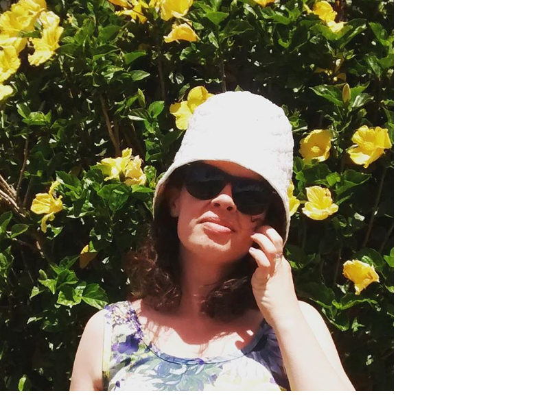

Kristy Palleson is a Wellington, New Zealand based maker who works predominantly in ceramic and textiles.
She progressed from a lifelong 'fiddler' to a maker with the gaining of a Bachelor Fine Art from Otago Polytechnic in 2006.
She also dabbles in leather, having worked as a shoe repairer, and prides herself on her ability to source bargains and make top notch french toast.
© 2017 Kristy Palleson